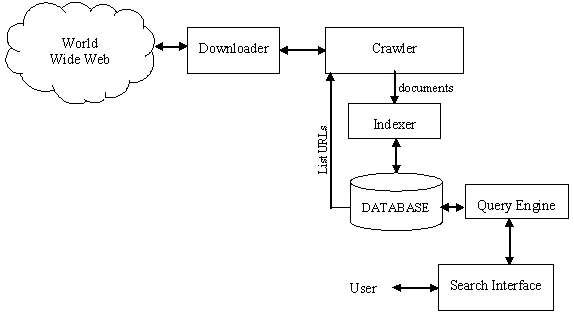

Web search engines are powerful software systems that are designed to enable users to search for information by typing key words, images, audio or through other means. The algorithms allow the search engines to systematically browse and index the web (web crawler) thus it can maintain real-time information. The results are usually presented in a columnar list of lines or pictures in a table/cell and contain a mix of webpages, articles, videos, images or other types.
This picture by Dr. Niraj Singhal shows how a typical web engine can constantly update its contents. The crawler accesses the w.w.w, downloads its contents and sends it in a certain indexed format to the database which organizes the data. Users can use the search interface (website) which activates the query engine. The query engine then searches the database of the information that most matches what the user has entered.
Each search engine websites differs in more ways than just their actual search query. Website layout, paid advertisements, search privacy, search filters and censorships and social media intergration to just name a few. Some may want to search in an encrypted server, their search history hidden from the advertisement's cookies. Others may want a more social integrated experience, with their emails and instant messenger accounts connected. Some websites places a greater emphasis of their other services such as news, books and maps.
COPYRIGHT ©2019 CHRIS YEUNG